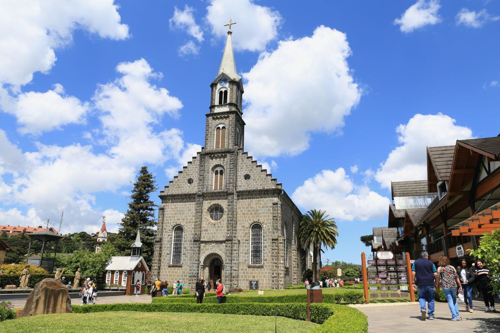
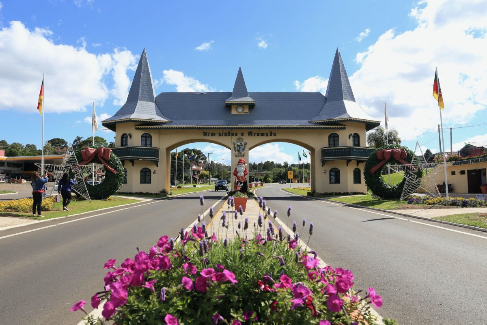
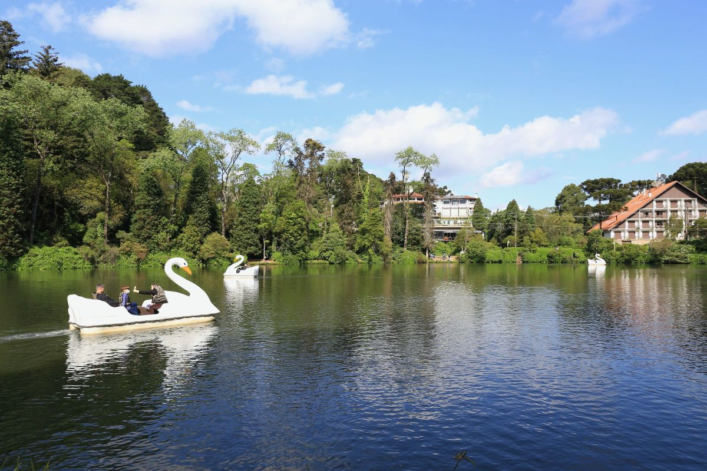
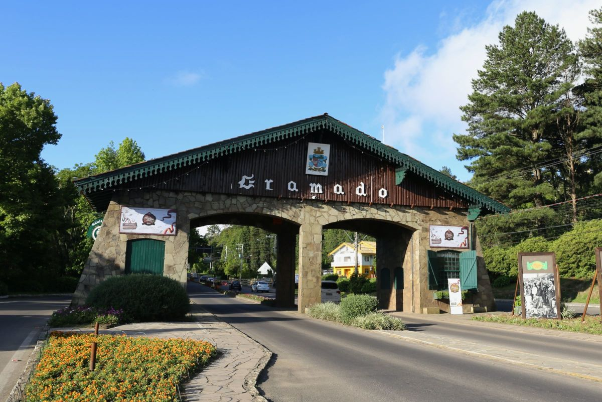
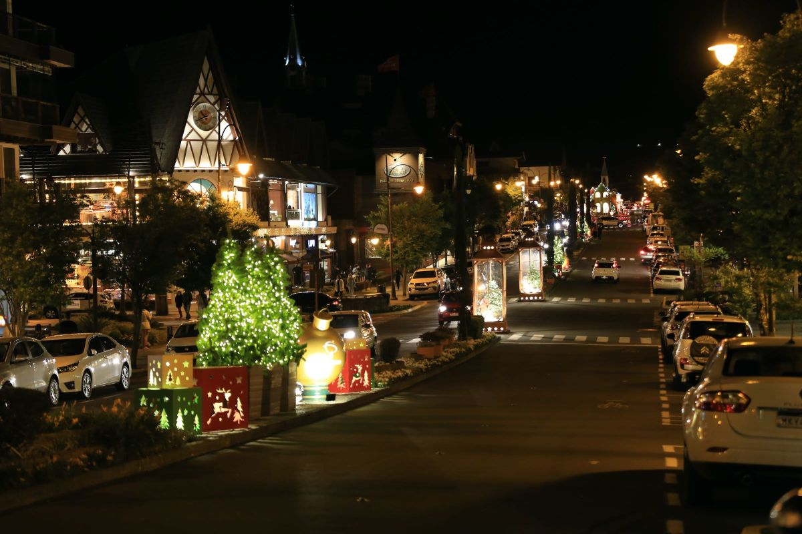

Gramado

Gramado, no Rio Grande do Sul, é o principal destino de inverno no Brasil e esse título é muito merecido. Engana-se quem pensa que a cidade, por ser pequena, não tem muito a oferecer, pelo contrário. São vários parques, museus, restaurantes e atrações de todo tipo que fazem de Gramado um destino propício para pessoas de todas as idades e em busca de todo tipo de viagem. Seja para um momento a dois, viagem em família ou com crianças, Gramado certamente irá te impressionar!
A pequena Gramado fica a apenas 115 km de Porto Alegre e o percurso até a cidade é fácil, seja de carro alugado ou um transporte contratado. O ideal é dedicar alguns dias à viagem para não se prender apenas a Gramado e conhecer também os encantos de Canela, a cidade vizinha que está a apenas a 7 km de distância. As duas cidades funcionam como uma só, tamanha a interação entre elas.
Prepare-se, porque Gramado tem cada vez mais atividades e em alguns poucos dias por lá você não conseguirá fazer tudo. O ideal é pensar quais passeios fazer antes mesmo de viajar!

Entendendo Gramado - RS
Gramado e Canela deixam seus visitantes maravilhados com a arquitetura própria da colonização europeia, pela gastronomia e pela enorme variedade de passeios. São tantas atrações diferentes que é até difícil criar um roteiro de alguns dias sem deixar nada de fora. A verdade é que você pode visitar Gramado várias e várias vezes, sempre conhecendo algo novo.
Viajar para a região é como estar numa cidade de interior, mas com toda a estrutura de cidade grande: eventos culturais, bancos, lojas e restaurantes da melhor qualidade marcam presença por lá. Isso sem falar no clima ameno, delicioso para um chocolate quente, e nos eventos que a cidade sedia, com o Natal Luz, que acontece anualmente e deixa a cidade toda enfeitada para o Natal.
Aliás, se a pretensão for manter uma dieta durante a viagem, já é bom saber que será difícil cumprir essa missão, tamanha as "tentações" que você encontrará. Sequências de fondue são uma característica marcante da gastronomia local, assim como as massas, carnes, casas de galeto e os chocolates artesanais das mais diversas qualidades.

Hotel em Gramado — as melhores alternativas para a sua viagem
Escolher um hotel em Gramado é uma das partes mais importantes da viagem e a boa notícia é que a cidade atende a viajantes com diferentes expectativas. Por lá, você encontrará hotéis com preços bem variados, hotéis mais simples e hotéis luxuosos, acomodações na área mais central e outras afastadas do burburinho, ideais para quem busca sossego ou para quem viaja com crianças.
Ao planejar onde ficar em Gramado, sugerimos que você pense no seu modo de locomoção pela cidade, se irá alugar carro ou não. Se você não pretende alugar um carro, será mais cômodo escolher um hotel ou pousada no centro de Gramado, que permita fazer algumas atividades a pé. Se, ao contrário, você pensa em alugar um carro, poderá ficar em um hotel mais afastado do centro sem qualquer problema.
Como chegar a Gramado - RS
A forma mais cômoda de chegar a Gramado é viajar para o Aeroporto de Porto Alegre (POA) e seguir viagem pela estrada com um carro alugado, Uber, ônibus (que sai do próprio aeroporto) ou também com o transfer compartilhado. Todas essas opções têm seus pontos positivos e negativos, confira melhor todas as dicas de como chegar a Gramado.
Quando ir a Gramado — melhor época na cidade
Gramado é um destino que pode ser visitado o ano inteiro, cada estação tem um charme diferente. Não há época ruim para conhecer a cidade, que fica sempre movimentada em feriados e períodos de férias escolares.
O clima da região, influenciado pelas montanhas, é mais fresco, principalmente à noite, por isso leve sempre um casaco na mala. O verão é mais quente e nesse período a cidade sedia o Natal Luz, enquanto no inverno a temperatura em Gramado cai bastante e os casacos saem dos armários trazendo todo o charme dessa época.

Pontos Turísticos de Gramado - o que ver e fazer na Serra Gaúcha
A variedade de pontos turísticos em Gramado é tão grande que quanto mais dias você tiver para criar o seu roteiro, melhor será. São realmente muitas atrações na cidade, que se estendem também às cidades vizinhas, como Canela. Passeios levam até a destinos um pouco mais distantes, como Bento Gonçalves, região produtora de vinhos no Rio Grande do Sul.
Entre os principais pontos turísticos de Gramado e Canela que você não pode perder estão o Parque Estadual do Caracol, onde fica a Cascata do Caracol, a Rua Coberta, que tem ótimos restaurantes e sempre sedia eventos, e o Lago Negro, ideal para um passeio ao ar livre. Também não dá para deixar de conhecer a Paróquia São Pedro, a Rua Torta, ótima para fotos, e o Mini Mundo, com réplicas de construções em miniatura, 24 vezes menores do que no mundo real!
Para curtir a natureza, visite o Parque de Lavandas Le Jardin e para fazer um piquenique no fim de tarde, a melhor pedida é o Parque Olivas de Gramado, que tem uma vista maravilhosa da área rural da cidade!
Parques de Gramado e Canela
A nova e moderna atração da região é o Skyglass Canela, uma plataforma com chão de vidro, a 360 metros de altura e com vista do Vale da Ferradura — vale uma visita! Entre os parques para quem busca um pouco mais de aventura, as dicas são o Snowland, um parque fechado onde você poderá encontrar neve artificial e o Acquamotion, parque aquático fechado, que você pode visitar mesmo nos dias chuvosos.

Natal Luz de Gramado
O Natal Luz é um evento natalino que acontece em Gramado todos os anos, entre os meses de novembro e janeiro (as datas específicas variam de acordo com cada temporada). Nesse período, a cidade fica toda iluminada para o Natal, além de ter diversos eventos natalinos, como apresentações musicais, desfile de carros alegóricos, shows teatrais, shows com efeitos audiovisuais, encontros com o Papai Noel e outros.
Alguns desses eventos são gratuitos e outros são pagos. É um ótimo momento para fazer uma viagem a Gramado e curtir a cidade ainda mais bonita e iluminada!

Informações úteis sobre Gramado - RS
População: 36 mil habitantes
Aeroportos mais próximos: Aeroporto de Canela (CEL), Aeroporto de Porto Alegre (POA) e Aeroporto de Caxias do Sul (CXJ)
Como ir do aeroporto de Porto Alegre para Gramado: ônibus executivo, transfer, carro alugado, táxi/Uber
Quantos dias ficar em Gramado: ao menos 5 dias
Tipo de viagem: romântica, com crianças, com amigos — Gramado é para todos!